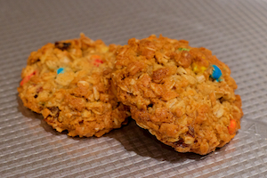

OATMEAL COCONUT PANTRY COOKIES
Chef Roman, August 24, 2018

Prep Time:
30 minutes
Cooking Time:
9-13 minutes
Skill level:
Easy
Makes:
24 cookies
Ingredients
- ⅔ cup granulated sugar
- ⅔ cup packed brown sugar
- 1 cup butter
- 2 eggs
- 1 teaspoon vanilla
- 1 teaspoon baking soda
- ½ teaspoon baking powder
- ½ teaspoon salt
- 3 cups quick-cooking or old-fashioned oats
- 1 cup all-purpose flour
- 1 ½ cup Toasted Coconut*
- ½ cup golden raisins
- ½ cup chopped walnuts
- ½ cup mini chocolate chips
* Now with more coconut
Directions
- Toast coconut at 350° F for about 10-15 minutes. Stir/toss every 5 minutes. Coconut should be golden brown. Be careful...coconut can go from golden brown to burnt very quickly. Cool completely.
- Beat sugar, butter, vanilla, and eggs.
- Mix all other ingredients together. The flour should coat all the ingredients. Then mix into the wet ingredients.
- Scoop cookies and press the dough firmly the ensure the shape is held.
- Bake at 375° F for about 9-13 minutes. This really depends on how big you made the cookies. Start at 9 minutes, and then just keep checking until they are done.